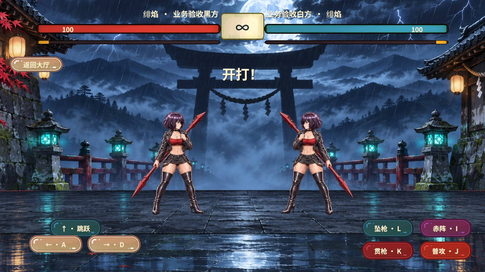
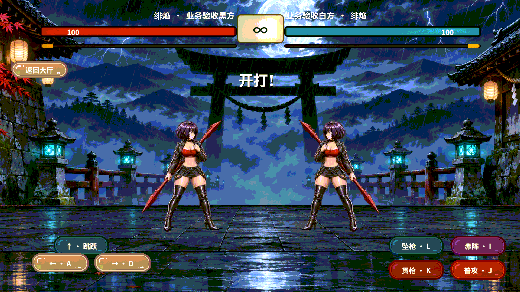
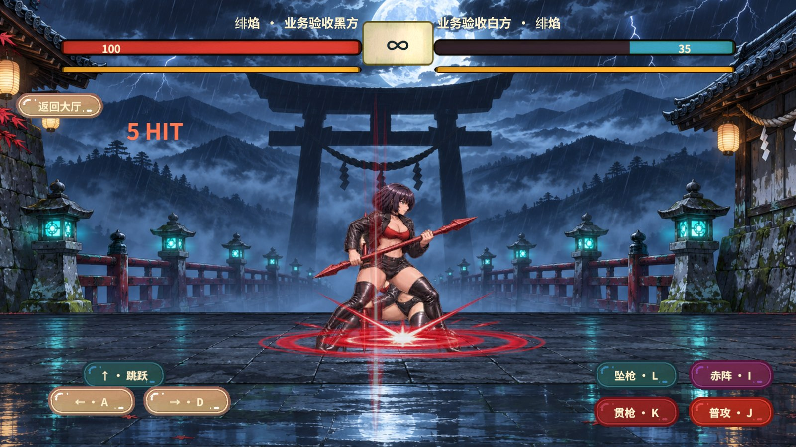
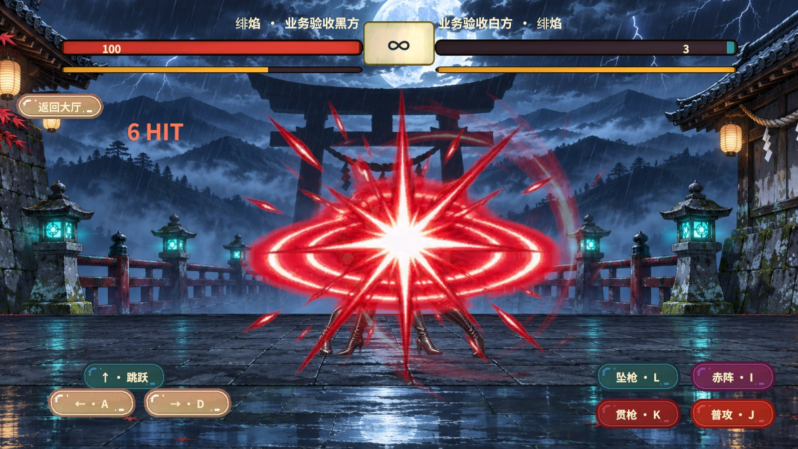

雨夜街机决斗
两席使用同一名红枪角色绯焰，在月下神社的雨夜擂台交战，按住移动时镜头带入对手，贴近时收紧画面，权威命中后出现强度不同的震动和特效。

角色、操作和运镜
绯焰参考用户提供的角色近景，保留紫黑短发、黑短夹克和红枪。32 张切片统一使用黑色皮质高跟过膝靴、浅纵向马甲线和自然腿部明暗。两席共享角色切片、动画和技能资源，各自驱动播放状态。
键盘 J 普攻，K 贯枪，L 坠枪，I 赤阵，触屏提供相同的四个动作键。普攻命中后可以接二段与三段，两种技能可以相互接续并以大招结束。同一连段内每种技能只允许提前接续一次。
王者 v122 中的 SkillChangeEvent 和 SkillSlotLinker.NextSkillObj 提供后续招式的组织参考。CameraSystem.SetZoomRateFromAgeLerpTarget 与 ShakeManager.TryShakeStart 提供表现镜头缓动及震动优先级参考。RevGame 由 C++ 根据命中、动作年龄、受击硬直、能量和技能使用掩码计算接续资格。双人镜头读两席已确认位置，预测只用于本机角色显示。
参考片段约 28–52 秒及 96–120 秒的突刺、横向枪芒、空中下扎、地面圆环和白芯红色冲击。贯枪是水平突进，坠枪由原生状态驱动离地并在判伤帧落地，赤阵使用红色环形起手和爆点。动画接触姿势对齐权威判伤年龄。角色、背景和特效使用生成原画，九段短音效为原声合成。 参考视频
实机六连击



验收结果
| 范围 | 结果 |
|---|---|
| 原生 FIFO 与 C# 双端 | 覆盖协议 6 封帧、检查点、三段普攻、两种技能接续顺序、大招、打空、受击硬直与预测回滚。 |
| 真实 KCP 回环 | 双端第 89 帧终局对账一致，指纹 691572454，共同确认三份样本后退出。 |
| RevCLI 场景和图集 | game.pvp.duel-build 生成两席共用的 11 个动画片段。game.pvp.duel-atlas 在 StandaloneWindows64 实际打包 32 张角色切片和 8 张特效切片，共一页。 |
| RevMCP 正式 UTP 场景 | 冷启动 AB 模式进入决斗，两席使用同一名角色的已打包 Sprite。HUD 依次触发三段普攻、技能一、技能二、大招，共六次权威命中。白方剩 3 点血，六种起手特效和音效均提交播放。坠枪离地后在命中帧落地，接近时镜头平移 214.7 个画布单位。房间已清理并返回大厅。 |
同一个 RevMCP stdio 会话先用 rev_discover 核对编辑器入口，再以 rev_call 从 StartScene 进入 Play。运行时重新发现 pvp.duel 后，用 rev_run 执行 pvp.duel-prediction-view-check、pvp.duel-arcade-prepare、pvp.duel-arcade-combo 和 runtime.screenshot，最后清理并停止 Play。
框架与版本
Revolution 的 RevScene、RevServices、表现状态机和音量门面支撑场景、动图、播放及测试接线。命中取消、检查点和双席帧输入由项目原生 GameCore 管理。角色和特效随内置决斗图集装载，原声音效随场景释放。
联机双方及服务器需要配套使用协议 6。协议 5 的旧决斗录像与检查点使用旧版本读取。Windows Editor 与同机网络已验证，移动端、公网和独立 Player 尚未实测。内置场景资源和原生 DLL 的 Player 更新需要构建对应版本。